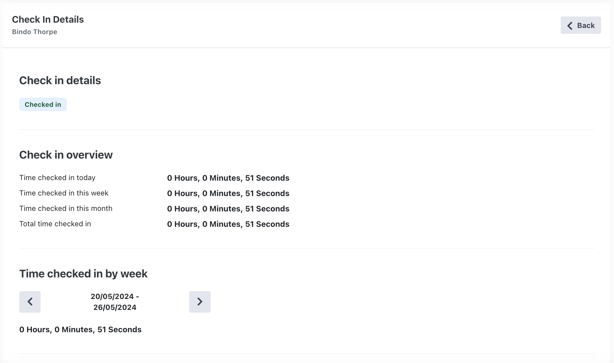

Created: 21/05/2024 | Last Update: 21/05/2024
Navigate to the Registrations tab and select the user you want to generate a QR-Code for.
In the top right you will see a button to download the QR-Code. Click on it and it will download the QR-Code.
Created: 21/05/2024 | Last Update: 21/05/2024
Navigate to the login screen, and create a new user.
Navigate to the Role Management tab, and assign the QRCodeReader role to the new user.
Make sure no other roles are selected.
You should now see a new tab Check-in in the navigation bar.
Created: 21/05/2024 | Last Update: 21/05/2024
Navigate to the Check-in tab. Here you need to allow your browser to use the camera functionality.
Scan the QR-Code of a user, to check in the user.
Once you have scanned the QR-Code, you will see a message welcoming the user.
Scan again to check out the user.
Created: 21/05/2024 | Last Update: 21/05/2024
Navigate to the Check-in list tab. Here you can see the users that are checked in on top of the list.
Click on the detail button on the desired user's row to view their check-in details.
On this page you can see all their check-in details. Here you can also check for a specific week, month, or time frame.
